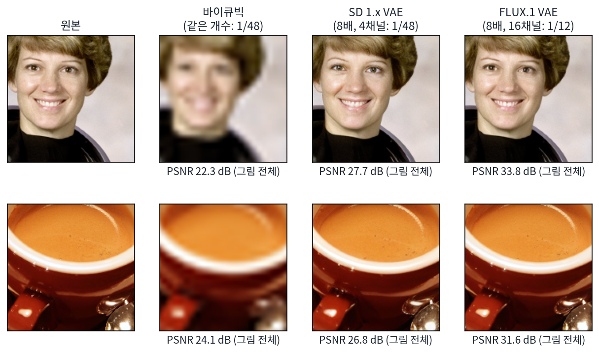
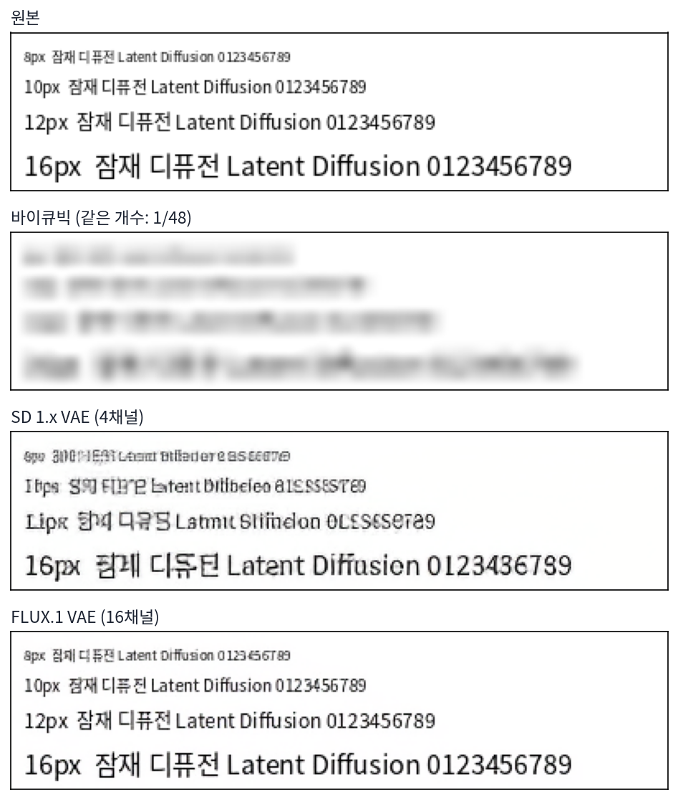

잠재 디퓨전: 작게 줄여 놓고 퍼뜨리기
이 장의 물음
어텐션은 칸마다 다른 모든 칸을 한 번에 읽는다. 멀리 떨어진 칸끼리도 층 하나로 이어지지만, 칸이 N개면 견주는 쌍이 N²개다. 지금까지 장난감으로 쓴 그림은 가로세로 32칸이었다. 사람들이 실제로 뽑는 그림은 가로세로 1024픽셀이고, 그 한 장은 1024 × 1024 × 3 = 3,145,728개의 수다. 픽셀을 칸으로 그대로 쓰면 칸이 1,048,576개, 쌍은 1조를 넘는다. 게다가 디퓨전은 그 신경망을 한 장에 수십 번 부른다. Stable Diffusion 1.x 가 512 × 512 그림을 만들면서도 가로세로 64칸, 칸마다 수 4개인 작은 그림 위에서 일한 까닭이 여기에 있다.
그런데 그 300만 개의 수가 모두 같은 무게일까? 사진을 반으로 줄여 친구에게 보내도 누가 찍혔는지, 어디서 찍었는지는 그대로 전해진다. 사라지는 것은 머리카락 한 올, 천의 결, 아주 작은 글씨 같은 것이다. 생성 모델이 1000걸음 동안 모든 칸의 잡음을 맞히며 정작 힘을 쏟는 곳은 어디일까? 이 장은 다음 물음에 차례로 답한다.
- 그림의 수 가운데 그림의 뜻을 정하는 몫은 얼마나 될까? 나머지를 생성 모델 말고 다른 무엇에 맡길 수 있을까?
- 줄인 공간이 디퓨전에 맞으려면 압축기는 어떤 모양이어야 할까? 손글씨를 줄였던 오토인코더의 가운데 칸을 그대로 쓰면 될까?
- 줄인 수의 크기가 잡음의 크기와 맞지 않으면 무슨 일이 생길까?
- 줄인 공간에서 퍼뜨리면 계산은 얼마나 줄고, 무엇을 잃을까?
- 되살리기를 잘하는 압축기가 디퓨전이 배우기에도 좋은 압축기일까?
지각 압축: 눈이 알아채지 못하는 결은 압축기에 맡긴다
디퓨전의 손실은 칸마다 섞인 잡음을 맞히게 한다. 고양이 사진이라면 고양이가 어디에 앉았는지와 함께, 털 한 올 한 올이 어느 쪽으로 빛을 받는지까지 칸마다 맞혀야 손실이 줄어든다. 사람이 그림을 볼 때 알아채는 것은 대부분 앞의 것이다. 털의 정확한 결은 조금 달라져도 같은 사진으로 보인다. 그렇다면 그 결을 맞히는 일을 비싼 생성 모델에게서 떼어 내, 그 일만 하는 값싼 도구에 맡길 수는 없을까?
역사: 두 단계로 나눈 그림 생성
그림을 짧은 표현으로 먼저 줄이고 그 표현을 만드는 법을 따로 배우는 두 단계 방식은 디퓨전보다 먼저 있었다. 2017년의 VQ-VAE 는 그림을 정해 둔 사전의 낱말 번호들로 바꾸고, 그 번호 줄을 하나씩 이어 쓰는 모델(자기회귀 모델)을 배웠다. 2021년 OpenAI 의 DALL·E 는 그림을 가로세로 8배 줄인 번호 32 × 32개로 바꿔 글과 함께 트랜스포머에 넣었다. 같은 무렵 하이델베르크 대학의 에서(Patrick Esser), 롬바흐(Robin Rombach), 오머(Björn Ommer)는 VQGAN 으로 가로세로 16배, 번호 16 × 16 = 256개까지 줄였다. 번호를 하나씩 이어 쓰는 트랜스포머는 줄이 짧아야 했기 때문이다.
대가는 되살린 그림의 질이었다. 나중에 롬바흐와 동료들이 같은 잣대로 잰 표에 따르면, ImageNet 그림을 줄였다 되살렸을 때 원본과의 차이를 잰 PSNR(아래에서 정의한다)이 VQGAN(16배)은 19.9 dB, DALL·E 의 압축기(8배)는 22.8 dB였다. 얼굴이 뭉개지고 글자가 지워지는 수준이다.
롬바흐와 에서는 뮌헨·하이델베르크의 블라트만(Andreas Blattmann), 로렌츠(Dominik Lorenz), 오머와 함께 2021년 12월 논문 「잠재 디퓨전 모델로 하는 고해상도 그림 합성」에서 이 두 단계를 디퓨전으로 다시 짰다. 출발점은 계산량에 대한 불만이었다. 당시 가장 좋은 픽셀 디퓨전 모델은 학습에 V100 GPU로 150~1000일이 들었고, 그림 5만 장을 뽑는 데 A100 한 장으로 닷새쯤 걸렸다고 논문은 적었다. 그들은 이미 학습된 픽셀 디퓨전 모델이 비트를 어디에 쓰는지 살펴보고, 학습이 크게 두 단계로 나뉜다고 보았다. 먼저 눈에 띄지 않는 촘촘한 결을 걸러 내는 단계, 그다음 그림의 뜻과 짜임을 배우는 단계다. 논문의 그림 설명은 「디지털 그림의 비트 대부분은 눈에 띄지 않는 결에 해당한다」고 적는다. 그 결을 걸러 내는 일을 미리 학습한 오토인코더에 맡기면, 디퓨전은 뜻을 배우는 일에만 계산을 쓸 수 있다.
같은 개수의 수로 줄여 보기
정말 그럴까? 결을 버리는 일을 가장 단순하게 하는 방법은 그림을 작게 줄이는 것이다. 512 × 512 사진(수 786,432개)을 수 48분의 1로 줄인다고 하자. 그림을 그대로 줄이면 가로세로를 √48 = 6.93배씩 줄여 74 × 74 × 3이 된다. 이것을 바이큐빅 보간으로 다시 키운 그림과, Stable Diffusion 1.x 의 압축기가 64 × 64칸에 칸마다 수 4개(역시 48분의 1)로 줄였다 되살린 그림을 견줘 보자. 사진은 자유 이용 예제 사진 다섯 장(우주인, 고양이, 커피, 로켓, 허블 망원경)이다.
차이는 PSNR(최대 신호 대 잡음비)로 잰다. 칸마다 원본과의 제곱 오차를 평균 내고, 밝기의 최댓값 255의 제곱을 그 평균으로 나눠 로그를 씌운 값이다.
제곱 오차가 작을수록 PSNR 이 크다. 오차의 평균이 10분의 1이 되면 10 dB 오른다.
다섯 장의 평균은 바이큐빅이 24.97 dB, Stable Diffusion 1.x 압축기가 28.16 dB다. 같은 개수의 수로 줄였는데, 배운 압축기가 남긴 오차가 훨씬 작다.

숫자보다 그림이 더 분명하다. 바이큐빅은 그림 전체를 고르게 흐리게 해서 눈썹과 치아가 번진다. 압축기는 눈썹, 치아, 커피 거품의 점까지 남겼다. 다만 자세히 보면 그 점들의 자리와 모양이 원본과 조금 다르다. 압축기는 원본의 결을 칸마다 그대로 옮긴 것이 아니라 「여기는 이런 결」이라는 것만 기억했다가 그럴듯한 결을 다시 그린 것이다. 사람의 눈은 그 차이를 거의 알아채지 못한다.
이처럼 그림의 뜻은 두고 눈이 알아채기 어려운 결만 덜어 내는 압축을 지각 압축 (눈에 띄지 않는 결을 버리는 압축 / perceptual compression)이라 한다. 롬바흐와 동료들은 그 뒤에 디퓨전이 하는 일, 곧 무엇이 어디에 있는지를 배우는 일을 뜻의 압축(semantic compression)이라 불러 둘을 갈랐다. 지각 압축을 압축기에 맡기고, 디퓨전은 줄인 공간에서 뜻만 배우게 하자는 것이다.
ML에서: 디퓨전은 줄인 칸에서만 일한다
Stable Diffusion 1.x 의 잡음 예측 신경망이 받는 입력은 512 × 512 그림이 아니라 압축기가 줄인 64 × 64칸, 칸마다 수 4개다. ComfyUI 에서 빈 그림으로 생성을 시작하는 노드(EmptyLatentImage)도 가로세로를 8로 나눈 크기에 채널 4개짜리 0을 만든다. 생성이 끝나야 디코더가 한 번 돌아 512 × 512 그림이 된다. 그래서 디퓨전이 아무리 잘 배워도 압축기가 되살리지 못하는 결은 그림에 나올 수 없다. 압축기의 되살리기 실력이 생성의 천장이다.
문제 1. 메신저로 보낸 단체 사진
친구가 휴대폰으로 찍은 4032 × 3024 단체 사진을 메신저로 보냈더니, 받은 사진은 1280 × 960이었다. (가) 픽셀 수는 몇 분의 1로 줄었는가? (나) 받은 사진으로 누가 왔는지는 모두 알아볼 수 있었는데, 뒷줄 사람들이 단 이름표 글씨는 읽을 수 없었다. 무엇이 사라진 것인가? (다) 메신저가 이렇게 줄여도 대부분의 사람이 불평하지 않는 까닭은?

4032 ÷ 1280 = 3.15니까 3.15분의 1이요.

가로만 나눴잖아. 세로도 3024 ÷ 960 = 3.15배 줄었으니까 픽셀 수는 12,192,768 ÷ 1,228,800 = 9.92, 거의 10분의 1이야.

10분의 1로 줄었는데 얼굴은 다 알아봤어요. 그럼 사라진 9할은 무엇이었을까요?

아주 작은 것들이요. 이름표 글씨는 원래 사진에서도 몇 픽셀짜리였을 테니까, 가로세로가 3분의 1이 되면 한 글자가 한두 픽셀로 뭉개져요.

(다)는 단체 사진을 보는 목적이 「누가 왔나」라서야. 그 목적에 필요한 건 얼굴의 큰 모양이고, 그건 10분의 1로 줄여도 남아. 버린 건 목적에 안 쓰이는 결이고.

그래요. 같은 사진이라도 어떤 차이가 중요한지는 보는 쪽이 정해요. 이름표를 읽어야 하는 사람에게는 이 압축이 실패고요.

조별 과제 회의록을 「결정 사항만」으로 줄여 보내면 다들 만족하는데, 누가 무슨 근거를 댔는지 알아야 하는 조교한테는 쓸모없는 거랑 같네요.
문제 2. 3 dB 의 무게
본문에서 사진 다섯 장을 수 48분의 1로 줄였다 되살린 PSNR 은 바이큐빅이 24.97 dB, Stable Diffusion 1.x 압축기가 28.16 dB였다. (가) 바이큐빅으로 512 × 512 그림을 수 48분의 1로 줄이면 줄인 그림의 한 변은 몇 픽셀인가? (나) 두 방법의 칸당 평균 제곱 오차는 몇 배 차이인가? (다) 칸당 제곱 오차의 제곱근(밝기 0~255 기준)은 각각 얼마인가?
(가)는 512 ÷ 48 = 10.7픽셀이요.

그렇게 줄이면 수가 몇 분의 1이 되죠?

가로세로를 둘 다 48분의 1로 줄였으니까 48² = 2,304분의 1이네요. 한 변은 √48 = 6.93분의 1이어야 해요. 512 ÷ 6.93 = 73.9, 74픽셀이요.
(나)는 PSNR 의 차이가 28.16 − 24.97 = 3.19 dB 니까, 100.319 = 2.08배. 바이큐빅의 오차가 두 배 남짓이야.
오차가 두 배면 눈으로는 얼마나 다를까요? (다)를 계산해 봐요.

255 ÷ 1024.97/20 = 14.4, 255 ÷ 1028.16/20 = 10.0이요. 밝기 255 단계에서 평균 14 단계 틀리느냐 10 단계 틀리느냐네요. 생각보다 차이가 작은데요?

그런데 그림으로는 바이큐빅이 확실히 흐렸어. 평균으로 재면 비슷한데 틀리는 곳이 달라. 바이큐빅은 모서리와 눈썹처럼 눈이 먼저 보는 곳을 몽땅 틀리고, 압축기는 결의 자리를 조금씩 틀려.
그래요. PSNR 은 칸마다의 오차를 똑같은 무게로 더하니까, 눈이 어디를 보는지는 모르는 잣대예요. 압축기를 학습할 때 제곱 오차만 쓰지 않는 까닭이 거기 있어요.
해석학에서 L² 거리가 가까워도 함수의 모양이 꽤 다를 수 있다던 거랑 같네요. 거리 하나로는 어디가 다른지 모르니까요.
문제 3. 작은 글씨
흰 바탕에 「잠재 디퓨전 Latent Diffusion 0123456789」를 글자 키 8, 10, 12, 16, 24, 32픽셀로 한 줄씩 쓴 그림을, Stable Diffusion 1.x 압축기와 같은 개수의 바이큐빅으로 줄였다 되살렸다. 줄마다 PSNR(dB)은 아래와 같다. (가) 글자가 클수록 압축기와 바이큐빅의 차이는 어떻게 되는가? (나) 8 ~ 12픽셀 글자에서는? (다) Stable Diffusion 1.x 로 간판의 작은 글씨를 그리게 하면 글자가 엉망이 되는 일이 잦다. 디퓨전 신경망을 아무리 잘 학습해도 고칠 수 없는 몫이 있는가?
글자 키 8 10 12 16 24 32 SD 1.x 압축기 19.9 18.2 17.7 18.8 22.5 27.2 바이큐빅 18.2 15.9 14.8 13.4 11.3 11.5

32픽셀에서는 27.2 대 11.5니까 압축기가 15.7 dB 나 앞서요. 8픽셀에서는 19.9 대 18.2로 1.7 dB 뿐이고요. 작은 글자에서는 압축기도 바이큐빅이랑 별로 다르지 않네요.

그림을 보면 더 심해. 8 ~ 12픽셀 줄은 압축기가 글자 비슷한 모양을 그리긴 했는데 다른 글자야. 「잠재」가 알아볼 수 없는 획이 됐어.
바이큐빅은 작은 글자를 흐리게 뭉갰고, 압축기는 또렷하지만 틀린 글자를 그렸어요. 어느 쪽이 PSNR 에 더 불리할까요?
둘 다 불리한데, 틀린 글자를 또렷하게 그리면 사람 눈에는 더 거슬려요. 흐린 건 「작아서 안 보인다」로 넘어가는데, 엉뚱한 글자는 「틀렸다」로 보이니까요. 압축기는 결을 그럴듯하게 다시 그리는데, 글자는 그럴듯한 결이 아니라 정확한 모양이어야 하는 결이에요.
(다)는 신경망을 키우면 되지 않아요? 학습을 오래 하면 글자도 배우겠죠.
디퓨전이 학습 데이터의 잠재를 완벽하게 만들어 냈다고 해요. 그 잠재를 디코더에 넣으면 무엇이 나오죠?
압축기로 줄였다 되살린 그림이요. 위 그림의 셋째 줄이요. 디퓨전이 아무리 잘해도 그보다 좋을 수는 없네요. 8픽셀 글자는 처음부터 잠재 안에 제대로 안 들어가 있으니까요.
그래요. 그 몫은 디퓨전이 아니라 압축기를 바꿔야 고쳐져요. 위 그림의 마지막 줄은 줄인 칸 하나에 수를 더 많이 담는 압축기예요. 그 대가가 무엇인지는 압축기의 생김새를 본 뒤에 따져 봐요.
녹음기 음질이 나쁘면 아무리 받아쓰기를 잘하는 사람도 들리지 않은 말은 못 적는 거랑 같네요.